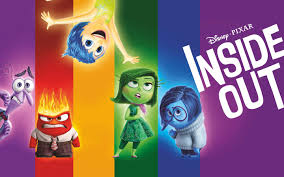

This is a story of how a boy met a girl. I'm sure there are millions of similar stories out there. But the fact that there are millions of diamonds out there doesn't mean that each of them is distinctly yet astonishingly beautiful.
To this day, I can't believe how lucky I was on the summer of 2015. It all started with an innocent Facebook chat on June 21st, 2015, my last day in the Korean military(my two-year service concluded on the 22nd). It was a how-are-you type of chat, no longer than 5 minutes long, where Nicole casually congratulated me for having completed my time in the Army. As conversations of the sort usually go, we arranged a date - July 7th, 2015 - for us to have dinner in Seoul. I would be interning at a gaming company, and she in the financial firm in the vicinity as well, so things just ran their natural course of action.
This is where it all started. A sandwich shop 5 minutes away from where I had worked. Here's an anecdote that Nicole never lets me forget: I was actually late to our very first dinner together, and to make it worse, I changed the venue 5 minutes before we were scheduled to meet. In my defense, it was because I had gotten off work especially late that day - but the underlying reasons notwithstanding, I was late. The sandwich shop was a result of my frantic last-minute Google searches, and truth be told the food wasn't all that memorable at all.
Just when it was bound to end as a meaningless dinner between two former schoolmates, we headed into a bingsu shop (bingsu is a Korean summer treat made with shaved ice, milk, and toppings of your choice. Ours happened to be mango). We started talking. And talking. For minutes, tens of them, maybe even hours. By the time it was time for her to head back home, I had explicitly told her that it was one of the most memorable dinners I had had in quite some time. And it wasn't sweet talk - I really did mean it, in that she was so similar to and different from me at the same time. But at the end of the day, it was just that - a dinner between two former schoolmates who had gone down different paths after graduation.
Though I've never told her, after that first dinner, I coulnd't get the thought of asking her out for the second time out of my head. I would constantly ponder on the bus, at home, and even at work on what my next excuse for meeting up with her would be. As every guy can probably relate to, I was feeling those butterflies in my stomach, balancing on the delicate line of making that bold move or not. Then, a thought hit me.
What if she really did agree to go out with me? Wouldn't I regret each day not spent with her?
That was the final push in the back. At the risk of everything burning down in flames(well maybe not that dramatic, but in the spur of the moment that is indeed what it felt like), I decided to ask her out for a movie - Inside Out.
It was an amazing movie. Top-notch. But this isn't about how tight the storyline is, or how amazing the creators' imaginations were(both are true, by the way, despite Nicole's opinions of the contrary). This is about what happened after. After the curtains were closed(or rather, the popcorns were trashed), we sat on a bench and talked again. And this time we literally talked for hours straight. About what, I really can't remember even when I rack my brains for memories of that conversation. All I can recall is that I was simultaneously feeling giddy and relaxed, as if I had been longing such a conversation for a long time. It felt right. If it weren't for the subway closing down, who knows how long we'd stayed on that bench, talking trivial matters but feeling anything but that.
We bid farewell and